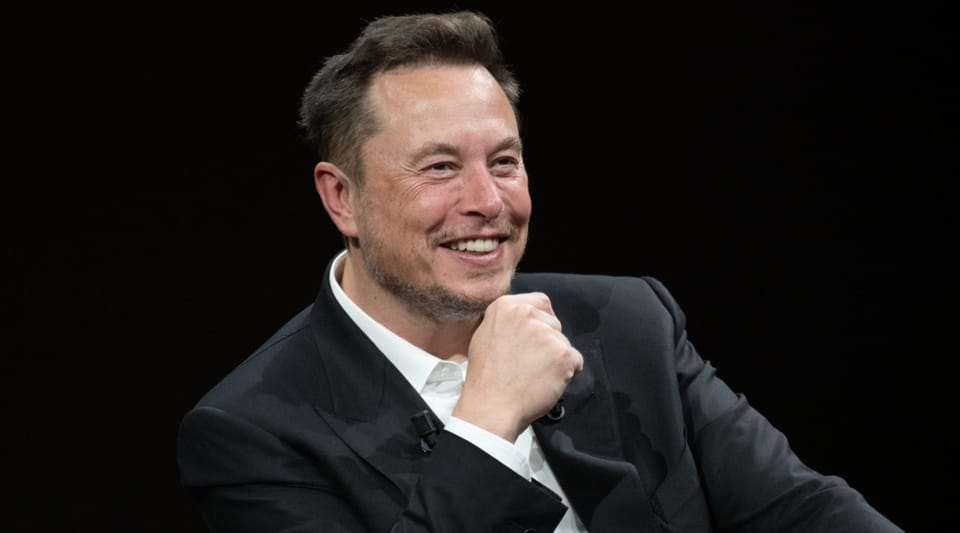

世界苦茶11月07日新闻 | 37条 | 习近平在海南可能参加福建舰服役仪式

习近平在海南可能参加福建舰服役仪式 | 巴西总统COP30呼吁气候行动 | 南希·佩洛西将不再寻求连任 | 特斯拉股东批准马斯克万亿美元薪酬方案
苦茶数据
美元兑人民币：7.12（昨日7.12，前日7.13）
美元兑日元：153.19（昨日153.86，前日153.62）
上证指数：4005（昨日3985，前日3969)
标普500指数：6720（昨日6796，前日6771）
比特币：102333（昨日103361，前日101950）
布伦特原油：63.68（昨日63.56，前日64.38）
中国新闻
• 香港立会选举截止报名 161份提名90个议席都出现竞争。
香港新一届立法会选举星期四截止报名，港府接获161份提名表格，90个议席都出现竞争。和上届选举相比，本届选举的提名多了7份。直选的10个地方选区有51份提名，每区最少有五人竞逐两个议席，其中九龙中选区的竞争最激烈，有六人竞逐两席。至于功能界别的28个分组，共接获60份提名。选举委员会界别则有50份提名，争取40席。香港立法会共设90个议席，分为选委会界别40席、功能界别30席、地区直选20席。这一制度安排源自2021年的选举制度改革，旨在确保“爱国者治港”原则全面落实。在本届立法会参选人当中，无人报称来自任何昔日的泛民主派政团。
• 专家预测中国或在2028年达碳排放峰值。
一项最新调查显示，大多数研究中国气候和能源政策的专家预计，中国将超越预设的减排目标，最有可能在2028年实现二氧化碳排放峰值。综合彭博社与法新社报道，芬兰研究机构能源与清洁空气研究中心和国际能源转型研究协会星期四发布了这项调查结果，接受调查的68名专家中，大多数认为中国将按计划在2030年前实现排放峰值，71%的受访者预计峰值将出现在2026年至2030年之间，其中多数预测为2028年。由于碳排放量占全球近30%，中国的减排速度对遏制全球变暖的努力影响巨大。中国的目标是在2030年前实现二氧化碳排放量达到峰值，力求在2060年前实现净零排放。
• 联合国报告:全球温室气体排放创新高,中国居首。
联合国报告：全球温室气体排放创新高，中国居首 2025/11/06 | 资料图 | 联合国环境规划署在11月5日前发布报告称，2024年全球温室气体排放量同比增加2.3％，达到历史最高水准，按二氧化碳换算，达到577亿吨。报告指出，这与《巴黎协定》中将全球平均气温较工业革命前水准的升幅控制在1.5摄氏度以内的目标相去甚远，如果不加强应对措施，本世纪内气温最高将上升2.8摄氏度。该报告预测，即便《巴黎协定》缔约国均实现各自承诺的截至2035年的温室气体减排目标，气温仍将上升2.3～2.5摄氏度。
• 中国是否叫停了世界上最大的粒子对撞机。
中国对“上帝粒子”的探索结束了吗？或将放弃全球最大对撞机项目 一项耗资数十亿美元、旨在研究希格斯玻色子的研究提案未能进入国家下一期五年规划的候选名单，其首席科学家表示。理解“上帝粒子”的探索在中国或许刚刚遇到障碍。一项雄心勃勃的、耗资数十亿美元的计划——建造世界上最大的粒子对撞机——据其首席科学家称，可能会被放弃。这台机器本可将中国置于全球基础研究和科学人才的顶端。“尽管我们将CEPC纳入下一期五年计划的提案未能成功，研究所将继续推进这一由国际合作在过去十年发展起来的努力。”
• 习近平海南听取工作汇报 港媒：料亲自主持第三艘航母服役仪式。
中国官媒报道，中共总书记、中国国家主席习近平星期四在三亚市听取海南自由贸易港建设工作汇报。香港媒体称，外界预料身兼中央军委主席的习近平，将在三亚亲自主持中国海军第三艘航空母舰“福建号”正式服役仪式。据新华社报道，习近平星期四上午在海南省会三亚市，听取中国国家发展和改革委员会主任郑栅洁、中共海南省委书记冯飞关于海南自由贸易港建设工作汇报。香港《明报》报道称，外界预料身兼中央军委主席的习近平将按照惯例，亲自主持在三亚举行的福建舰入列仪式，随后转赴广东出席星期天在广州开幕的第15届中国全国运动会。该报报道还指根据航班追踪资讯与卫星影像，习近平的专机已于星期三中午飞抵三亚。
印太新闻
• 调查太子集团犯罪 台北地检署拘提25名被告。
涉电信诈骗和洗钱罪名而在美国被起诉的柬埔寨太子集团组织，包含三名台湾人、九家登记于台湾的公司。台湾检察官声请扣押45亿余元资产获准，并于星期二拘提25名被告。根据台湾法务部调查局星期二公布的新闻稿，以陈志为首的太子集团在柬埔寨从事诈欺犯罪，并于多地建立庞大企业网络进行洗钱。美国联邦检察官已于10月8日对陈志等人提起公诉，也将该集团在台湾境内所设九家公司及三名台湾人列入制裁名单。台北地方检察署随即于10月15日分案，指派人员侦办太子集团在台洗钱等犯罪行为。
• 台风卡尔梅吉在菲律宾造成至少114人死亡后袭击越南。
台风卡尔梅吉在菲律宾造成至少114人死亡、淹没整个城镇后，于周四袭击越南。越南媒体和政府在线门户称，风速最高可达每小时92英里，超过26万人已待命参与救援。政府警告称，国内已有六个机场被迫关闭，预计数百个航班将受到影响。该国此前已在与创纪录的降雨和洪水作斗争，如今正面临今年亚洲最强台风之一。环境部周四在声明中表示，“台风已在达克拉克省和嘉莱省登陆”，该声明被包括法新社在内的多家媒体引用。越南国家气象预报部门称，未来六小时内，七个市省的数百个地区存在洪水和山体滑坡风险。已有多个省份报告了受灾情况，包括房屋屋顶被掀，酒店玻璃幕破碎，城市街道和乡村道路上的大树被强风连根拔起或折断。
• 台湾前总统蔡英文将访德 出席柏林自由大会。
台湾前总统蔡英文将访德 出席柏林自由大会 2025年11月6日台湾前总统蔡英文下周将访问德国，并在柏林自由大会上致辞。柏林将举行首届自由周活动，自由大会是一大亮点。去年卸任的台湾前总统蔡英文将于周六前往柏林，并将在下周一的柏林自由大会上致辞。蔡英文办公室在一份声明中表示，蔡前总统希望此行可加深台湾与德国以及欧洲志同道合的民主国家之间的合作与交流。
• 印度雄心勃勃欲成造船大国。
从造船业的全球份额来看，中国，南韩，日本三国合计占比超过9成，印度尚未进入全球造船业前列。随着地缘政治风险上升，出现了向中国订购船舶的风险，海运企业开始分散船舶订单。印度造船业打算抓住替代中国的需求。
• 北京强烈谴责新西兰议员出席“不可接受”的台湾招待会。
大使馆投诉该活动违反一中原则，但外交部长温斯顿·彼得斯称批评是“错误”。北京批评一支跨党派的新西兰议员团体出席由台湾事实上的代表机构举办的招待会，称其违反了一中原则。上周，中国驻新西兰大使王晓龙致信多位出席10月24日在台北经济文化办事处举办的活动的议员，该活动旨在纪念中华民国的成立。王在信中警告他们，出席该活动违反了新西兰的外交政策，“因此不可接受”。新西兰外交部长温斯顿·彼得斯周二批评了这封信，称这是“一个他不应该犯的错误”。
科技新闻
• 特斯拉股东已批准埃隆·马斯克价值1万亿美元的薪酬协议。
特斯拉股东已批准一项破纪录的薪酬方案，可能价值近1万亿美元，授予公司首席执行官埃隆·马斯克。周四在公司年度股东大会上，75%的投票股东通过了这一前所未有的协议。该协议要求已是世界首富的马斯克在未来数年内大幅提升这家电动汽车公司的市值。若他达到各项目标，将获得数亿股新股份作为奖励。此项协议规模巨大且具争议，但特斯拉董事会辩称若不通过，马斯克可能会离开公司——公司无法承受失去他的代价。在德克萨斯州奥斯汀举行的会议上，宣布结果时会场响起热烈掌声。
• 扎克伯格与陈将大部分慈善捐助转向科学，重点关注人工智能与生物学以遏制疾病。
加州红木城——在过去十年里，陈薇博士和她的丈夫马克·扎克伯格在部分慈善投入上追求一个崇高目标——“治愈、预防或控制所有疾病”——即便不能在他们有生之年实现，也希望在子女一代完成。但在此期间，他们也资助了贫困学校、移民改革以及与多样性、公平与包容相关的工作。如今，这对亿万富翁夫妇将把大部分慈善资源转向他们的科学机构Biohub，并集中利用人工智能来加速科学发现。他们的设想是开发基于人工智能的虚拟细胞模型，以理解细胞在人体内的运作机制，研究炎症，并利用人工智能“利用免疫系统”来进行疾病的检测、预防与治疗。
经济新闻
• 多家欧美品牌在华业绩回暖 分析指整体消费复苏仍乏力。
经过近三年的低迷，多家欧美品牌在华业绩出现回升，相关跨国企业高管也对中国市场表现出谨慎乐观态度。受访分析师指出，本轮回暖一定程度上是受前几年低基数影响；总体来看，中国消费市场复苏依然乏力。彭博社星期二报道，法国美妆企业雅诗兰黛首席执行官法韦里受访时说，中国市场正在积聚一些动力，“市场开始加速复苏”。自年初接任雅诗兰黛首席执行官以来，法韦里今年已三次访华。他今年3月出席中国发展高层论坛时，提出在中国市场“重塑美妆新境”，加大对创新技术投入，以相应市场趋势。雅诗兰黛上周发布的最新财报显示，今年第三季公司净销售额同比增长4%，其中中国大陆同比增长9%，为各大区中增幅最快。
• 欧盟称已与中国建立稀土供应“特别沟通渠道”。
欧盟称已与中国就稀土供应建立“特别沟通渠道”，以确保能取得对欧盟工业至关重要的稀土元素。路透社星期四报道，欧盟委员会贸易和经济安全专员谢夫乔维奇表示，已多次直接与中国商务部长王文涛讨论该问题，强调管理不善的出口程序可能对欧盟的生产和制造业产生“非常负面的影响”。谢夫乔维奇是在科威特出席一项论坛时，如此回应路透社的提问。他称，布鲁塞尔和北京同意优先处理欧洲企业的申请，并通过新的渠道，双方官员正共同审查并加快处理稀土元素的出口许可证。据谢夫乔维奇透露，自相关管控措施生效以来，欧洲企业已向中国政府提交约2000份申请，其中略超过半数已获批准。他表示，会持续敦促北京加快处理其余申请。
• 中国加入支持巴西森林基金，但推迟作出资金承诺。
巴西财政部长在新闻发布会上表示，中国已支持巴西在第30届联合国气候大会上启动的具有里程碑意义的雨林保护基金，但在大会期间不太可能宣布任何财政捐助。热带森林永续基金的启动迄今已成为本届联合国气候大会的主要成果之一。该机制是一项多边安排，旨在以奖励的方式鼓励热带国家维持森林而非砍伐。作为一个永久性捐赠基金运作，该基金将结合公私投资，通过产生回报来为对森林国家的年度付款提供资金，从而把保护转化为一种资产类别，而非单纯的慈善行为。财政部长费尔南多·哈达德表示，巴西预计到2026年完成首轮投资。
• 特朗普接待中亚领导人之际，美国寻求在稀土金属问题上绕开中国。
华盛顿——随着美国加紧寻找用于智能手机，电动汽车和战斗机等高科技设备的稀土金属，特朗普将于周四在白宫接待五个中亚国家的领导人。特朗普与来自哈萨克斯坦，吉尔吉斯斯坦，塔吉克斯坦，土库曼斯坦和乌兹别克斯坦的官员将在一天傍晚举行峰会与晚宴，此前特朗普在与中国领导人习近平就稀土元素出口这一双方贸易谈判中的关键分歧至少实现了短期缓和。上月初，北京扩大了对关键稀土元素和磁体的出口限制，但在上周特朗普与习近平在韩国会谈后宣布，中国将把新限制推迟一年生效。华盛顿目前正寻求绕开中国获得关键矿产的新途径。
• 英国最大制药公司称英国NHS的定价提议仍然不够。
英国最大制药商表示，只有在部长们在与美国的贸易谈判中就国家医疗服务体系支出改革采取更进一步的措施时，才会批准在剑桥建设2亿英镑研究基地的计划。英国在与特朗普政府官员的密集讨论后已拟定提案，拟提高由国家资助的NHS允许向制药公司支付药品费用的上限。但阿斯利康首席执行官帕斯卡尔·索里奥特正在推动进一步提高该决定NHS可用于新药支出的阈值——即NICE用来判断某种治疗是否物有所值的基准。
• 关税退款现在非常有可能，而且将是一场巨大的混乱。
在周三，由于最高法院多位保守派和自由派大法官对特朗普政府维持大部分关税的理由表示强烈怀疑，企业获得关税退款的可能性大幅增加。关键问题是：潜在的关税退款将如何运作？根据美国海关与边境保护局截至9月23日的数据，联邦政府已从正在被质疑的这些关税中征收近900亿美元的税收。这一数字至少会持续增长，直到判决公布，而判决可能要数月后才会出炉。谁能拿到 如果大法官们裁定不支持特朗普政府，目前尚不清楚哪些企业可能有资格获得退款。
• 媒体：中国下令数据中心须采用国产AI晶片。
2025年11月6日路透社引述两名知情人士说法指，中国官方发布指引，要求接受国家资金、新设置的数据中心采用国产AI芯片。此举被视为对美出口管制的反制，也是助推本土芯片发展。辉达执行长黄仁勋警告，更低的能源成本与宽松监管，可能让中国在AI竞赛中超越美国。路透社周三引述知情人士说法称，近几周，中国官方监管机构下达指导意见，要求接受国家资金新设置的数据中心，须使用中国生产的人工智能芯片。其中，设置完工进度低于30%的数据中心，必须移除所有外国生产的芯片、或取消采购计画；进度高于30%者，则视个案情况而定。
• 中国贸易谈判代表敦促美国加强农业合作。
中国首席谈判代表李成刚敦促美方加强农业合作 中国首席贸易谈判代表、商务部副部长李成刚呼吁美方为两国农业合作创造“良好环境”。商务部周三公布的消息称，李成刚周二在北京会见来访的美国农业贸易代表团时表示：“我们希望美国与中国共同努力，以大局为重，为农业等领域务实合作创造有利氛围。” 李成刚指出，中美间的农业贸易出现了一些“波动”，其根源在于美国单方面加征的关税。声明称，双方就中美经贸关系、农业贸易及其他事项交换了意见。此前，中国曾是美国大豆的最大海外市场，经常接收超过半数的美国产大豆出口。但在双边贸易紧张加剧的背景下，中国从今年秋季新收获的大豆暂停购买美国大豆。
俄乌战争
• 俄罗斯士兵在乌克兰史无前例的审判中被判终身监禁。
俄士兵在乌克兰史无前例审判中被判终身监禁 乌克兰一法院首次对被控杀害乌克兰战俘的俄方士兵判处终身监禁。27岁的德米特里·库拉肖夫被认定枪杀了41岁的乌克兰老兵维塔利·霍德纽克。霍德纽克在2024年被俘后已投降。乌克兰国家警察表示，“鉴定报告、证人证词和现场视频证实，该名俄军士兵在指挥官命令下故意杀害了战俘，指挥官曾指示部队不要俘虏乌克兰士兵。”今年早些时候开始、历时数月的审判听取了检方关于库拉肖夫所在部队在2024年1月6日上午突袭扎波罗热地区一处乌克兰阵地的陈述。检方称，尽管霍德纽克从掩体爬出时双手空空并投降，库拉肖夫仍近距离用AK-47多次瞄准射击，将其击毙——这构成违反战争法的行为。
• 罗马尼亚呼吁美国“推翻”裁减驻军的决定。
布加勒斯特——罗马尼亚国防部副部长在接受POLITICO采访时表示，华盛顿应放弃从罗马尼亚撤出数百名部队的计划，称此举可能助长俄罗斯关于北约不合的宣传。“我认为这一决定可以被推翻，而且应该被推翻，”罗马尼亚国防国务秘书索林·莫尔多凡说。上周，五角大楼表示将把一支约800人的步兵旅从罗马尼亚调回肯塔基州，美军正把重心转向如边境防护和印太地区等国内优先事项。
• 可能成为下一任外长的人士表示，捷克将大幅削减对乌克兰的军事援助。
捷克——乌克兰最坚定的盟友之一——据即将上台的联合政府一位关键领导人称，正考虑在未来数周新政府掌权后，切断对基辅军队急需的武器和弹药供应。右翼民粹主义的驾驶者党党主席菲利普·图雷克表示，该国将“维持对北约的承诺并遵守国际法”。
• 拉马福萨称，加入俄乌战争后南非人被困顿巴斯。
拉马福萨称加入俄乌战争后被困顿巴斯的南非人 南非政府表示，已收到17名公民的求救电话，这些人此前加入了俄乌冲突中的雇佣军部队。这些男子年龄在20至39岁之间，目前被困在乌克兰饱受战争摧残的顿巴斯地区。政府发言人表示，总统西里尔·拉马福萨“已下令调查导致这些年轻人被招募参与疑似雇佣兵活动的情况”。声明未说明这些南非人是为冲突的哪一方作战。除非得到政府授权，否则在南非担任雇佣兵或为他国政府作战是非法的。政府称，这些男子是在被承诺高额合同的幌子下被诱骗加入雇佣军队伍的。发言人文森特·马格韦尼亚补充说，南非政府正通过“外交渠道”争取他们返回。马格韦尼亚表示，16名男子来自夸祖鲁-纳塔尔省。
世界新闻
• 联合国在叙利亚总统赴白宫访问前解除对其的制裁。
联合国在叙利亚总统白宫访问前解除对其制裁 联合国安理会就美国提出的一项决议投票通过，决定在叙利亚总统艾哈迈德·沙拉阿下周访美之前解除对他的制裁。沙拉阿在领导一场反叛攻势并于2024年12月推翻巴沙尔·阿萨德后，被确定为过渡总统，结束了长达13年的内战。美国驻联合国大使迈克·沃尔茨表示，联合国发出了一个“强烈的政治信号”，承认自阿萨德被罢免以来，叙利亚进入了一个“新时代”。作为伊斯兰主义组织哈雅特·塔赫里尔·沙姆领导人，沙拉阿此前受联合国制裁，该组织此前与基地组织有关联。美国于7月将HTS从外国恐怖组织名单中移除。联合国还解除对叙利亚内政部长安纳斯·哈塔卜的制裁。叙利亚外长对解除制裁表示欢迎。
• 最高法院允许特朗普禁止在护照上选择性别。
最高法院允许特朗普禁止护照上性别自选 美国最高法院周四允许特朗普总统推进他的计划，要求护照申请人在护照上填写与出生证明上标注一致的性别。法院此项决定推翻了下级法院暂停特朗普政策的命令，后者曾允许申请人自行选择在护照上以“M”表示男性，“F”表示女性或以“X”表示既非两者。护照上开始标注男性和女性性别标记始于1976年。政府在30多年来一直允许公民申请将护照上的性别反映其性别认同，而非出生证明上的性别。但使用“X”的选项仅始于2021年，在拜登总统任内。由阿什顿·奥尔领导的一组全国性原告表示，奥尔是一名跨性别男性。
• 法官将命令限制驻芝加哥联邦特工对抗议者和媒体使用武力。
周四，一位联邦法官发布了一项广泛的禁令，限制联邦特工使用武力，并表示负责领导这场移民打击行动的一名边境巡逻局高级官员多次就抗议者和记者构成的威胁撒谎。这项初步禁令是针对新闻媒体和抗议者提起的诉讼作出的。诉讼称，联邦特工在这次行动中使用了过度武力，该行动已导致超过3000人被逮捕，并在美国第三大城市及其众多郊区引发激烈冲突。“我几乎看不出联邦特工当前使用武力的正当理由，”美国地方法院法官萨拉·埃利斯说。
• 特朗普公布协议，扩大肥胖药物覆盖范围并降低费用。
周四，总统唐纳德·特朗普公布与制药公司礼来和诺和诺德达成的一项协议，旨在扩大对流行肥胖治疗药物Zepbound和Wegovy的覆盖并降低价格。这类被称为GLP-1受体激动剂的药物近年来热度飙升，但由于成本高昂——较高剂量约每月500美元——且保险覆盖不稳，患者获取一直是个难题。联邦估计显示，美国有超过1亿成年人患有肥胖症。根据政府说法，从明年开始，这些用于治疗肥胖的药物将扩展到医保受益人覆盖，政府还表示部分针对无保险患者的降价也将分阶段实施。如果获批，新上市的口服剂型起始剂量也将定价为每月149美元。
• 世界上最年长的总统在喀麦隆宣誓就职，开始第八个任期。
全球最年长总统在喀麦隆宣誓就任第八个任期 喀麦隆92岁的总统保罗·比亚在宣誓就任连续第八个任期时，承诺在选后暴力笼罩的国家恢复秩序。在就职演说中，这位全球最年长的总统向抗议受害者表示哀悼，并将骚乱归咎于他所称的“失责的政客”。“我可以向你们保证，秩序将重建，”他表示，并称将国家拖入危机毫无意义。在上月选举被指存在舞弊之后，比亚称选举过程令人满意，并赞扬了选举机构Elecam。根据官方结果，这位90多岁的总统获得54%的选票，而伊萨·奇罗马·巴卡里则获得35%。奇罗马·巴卡里坚持自己是选举的合法胜者，并指控当局舞弊，但当局否认这些指控，结果公布后全国爆发致命抗议。
• 特朗普顾问对德国选择党说：“我们在一起”。
美国总统唐纳德·特朗普的一名顾问亚历克斯·布鲁塞维茨对被德国当局列为极端主义组织的极右政党德国另类选择党的领导人表示，他将其视为正在塑造国家未来的“大胆的有远见者”。布鲁塞维茨周三晚上在柏林对一屋子的AfD议员和支持者发表讲话时宣称，MAGA保守派与德国日益崛起的极右力量以及全球其他民族主义力量在与他所称的“马克思主义者”和“全球主义者”进行一场“为我们民族灵魂而战的精神战争”中站在同一战线。布鲁塞维茨是一位社交媒体专家，被认为帮助特朗普重返白宫。
• 以色列战机袭击黎巴嫩南部城镇，几乎每天的攻击不断升级。
以色列战机周四袭击了黎巴嫩南部数个城镇，敦促居民撤离后对该国实施接近每天的打击，标志着其空袭行动升级。空袭发生数小时后，武装组织真主党警告黎巴嫩政府不要与以色列进行谈判。以色列阿拉伯语发言人阿维查伊·阿德拉伊曾警告边境附近的泰伊巴镇、位于沿海城市泰尔以东的泰尔德巴及黎巴嫩南部的艾塔·贾巴尔居民，撤离距离他们称为真主党使用目标的居民建筑500米以外。随后又对扎乌塔尔·阿尔-沙尔基耶和卡法尔·杜宁等镇发出更多警告。以色列军方表示，袭击目标是这些地区真主党的军事基础设施，包括“建在民居区中心的武器储存设施”。
• 南希·佩洛西将不再寻求连任，结束她在美国众议院的传奇生涯。
众议院资深议长南希·佩洛西将不寻求连任，结束她在美众院的传奇生涯 曾任强势民主党议长的南希·佩洛西不会寻求连任众议员。佩洛西的宣布结束了她那段传奇生涯——她不仅是众议长办公室的首位女性，也可说是美国政坛最有权势的人物之一。华盛顿——名誉议长南希·佩洛西将不会寻求连任众议院议员，标志着她那段既是首位女性众议长又可谓美国政坛最具权势者的传奇生涯落幕。代表旧金山近四十年的佩洛西在周四宣布了这一决定。“我将不会竞选连任国会，”佩洛西在一段面向选民的视频讲话中表示。视频中，佩洛西神情乐观，展望未来，画面里穿插着她数十年成就的影像。她表示将完成最后一年的任期，并向那些选她入阁的人们发出号召。
• 教皇利奥会见巴勒斯坦主席阿巴斯，讨论加沙亟需援助及两国解决方案。
教皇利奥与巴勒斯坦总统阿巴斯会面，讨论加沙援助迫切需求与两国方案 梵蒂冈城——教皇利奥十四周四首次会见巴勒斯坦总统马哈茂德·阿巴斯，双方讨论了向加沙平民提供援助的迫切需要以及通过推动两国方案结束该地区冲突的必要性。梵蒂冈在一份简短声明中将此次大约持续一小时的会见描述为“友好”。此次会面发生在美方斡旋的停火协议在加沙地带生效近一个月之后。教皇与阿巴斯此前未曾面对面会晤，曾在七月通话，讨论加沙冲突和约旦河西岸的暴力局势。“在友好的交谈中，双方承认必须紧急向加沙平民提供援助，并通过推动两国方案来结束冲突，”圣座表示。九月，教皇利奥及其高级外交官曾对以色列总统表示，两国方案是“摆脱战争的唯一出路”。
• 美国司法部一直在解雇具有移民辩护背景的法官。
司法部正在解雇有移民辩护背景的法官 对三位移民法官来说，那天经历了类似的转折。凯拉·利连于2023年被聘用，7月在加利福尼亚康科德的一间法庭主持审理时，暂停了一名寻求庇护移民的听证会去阅读一封电子邮件。“我告诉他们我们不能开庭了，因为我刚被解雇，”利连说。出庭的有一名法庭口译员和一名国土安全部的律师。“他们问我是不是在开玩笑。” 安娜姆·佩蒂在从事移民辩护工作多年后于2023年被任命为移民法官，9月她在位于弗吉尼亚安南代尔的移民法庭的法官席上。当时正值她担任该职两周年纪念日，她在两场听证间收到那封邮件。“我的声音在颤抖，手在发抖，脑子一片空白。我宣读了裁决，把所有人都解散了，但没有提到任何事。
• 巴西总统卢拉在COP30开幕式上要求拿出勇气——还有资金——来拯救地球。
巴西总统卢拉在第30届联合国气候变化大会开幕式上呼吁要有勇气——并提供资金——来拯救地球。中国国务院副总理丁一表示，各国应以公平正义的方式履行《巴黎协定》的承诺，并呼吁全球采取气候行动。卢拉在位于亚马逊雨林腹地的贝伦发表讲话，称此次会议是“一次真相的COP”，并表示各国必须决定是否有勇气和决心改弦更张。他将此次大会视为各国弥合政治演讲与日益恶化的干旱、洪水和森林砍伐影响之间鸿沟的决定性时刻。巴西领导人指出，亚马逊是数百万人的家园，拥有无与伦比的生物多样性，体现了繁荣与保护之间的张力。他说，那里的居民每天都在承受气候变化的后果，有权要求世界其他国家作出更强有力的承诺。
• 特朗普称选举给共和党带来政府停摆压力，但他希望废除阻挠议事规则。
特朗普称大选给共和党带来结束政府关门的压力，但他希望废除阻挠议事权 总统特朗普与民主党人罕见地产生一致看法，双方都认为史上最长的政府停摆导致周二非大选年的选举中共和党表现惨淡。“我认为如果你读民调员的说法，停摆是一个很大的因素，对共和党不利，”特朗普周三在与共和党参议员共进早餐时表示。“他们说我不在选票上是最大因素，但我不太确定。” 民主党人在各级选举以及全国范围内获胜，选举信息集中在关注民生负担能力并反对特朗普政府政策——包括这一年来解雇联邦雇员，削减开支和惩罚反对总统者的推动。国会领导人迄今未能就停摆进行谈判或紧急行动以结束停摆。
• 特朗普要求将正为世界峰会做准备的南非逐出二十国集团。
特朗普称南非不应再属于G20，南非为峰会做准备 南非对美国总统唐纳德·特朗普的最新批评置之不理。特朗普表示，他认为该国不应该再是G20的一员。总统发言人文森特·马格温亚告诉BBC，南非有信心在本月晚些时候世界最大经济体领导人在约翰内斯堡聚集时，成功举办一次G20峰会。特朗普多次指责南非对其白人少数群体存在歧视，他本人将不出席峰会，改派副总统JD·万斯出席。G20的主席国每年轮换并确定领导人峰会的议程——在南非之后将由美国接任。“南非根本不应该再在这些集团里，因为那里发生的事情不对。我不会代表我们国家出席。它不应该在那里，”特朗普周三在迈阿密的一次会议上说。南非政府没有对这些言论作出完整声明。